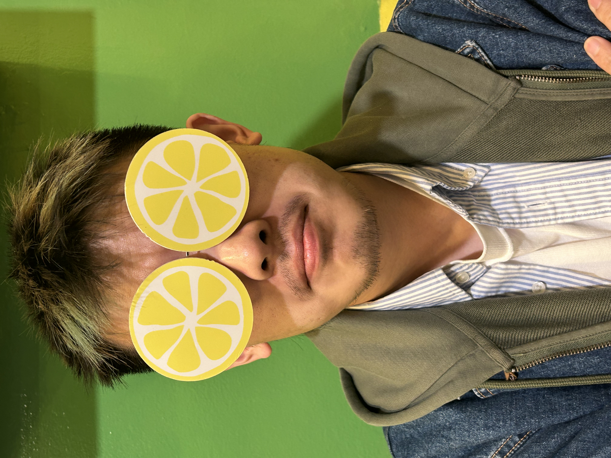

Yiran Zeng
曾怡然he / him
博洛尼亚大学计算机科学与工程博士生，自然语言处理方向。我把结构化知识注入语言模型，让它们在医疗问答这样的高风险场景里，回答得更可靠、也更可解释。
PhD student in Computer Science & Engineering at the University of Bologna, working on natural language processing. I infuse structured knowledge into language models so they answer more reliably — and more transparently — in high-stakes settings like medical question answering.
00 · ABOUT
关于About
我相信好的语言模型不只是能说话，更要说得有据可依。我的研究围绕一个问题展开：如何把图谱、本体这样的结构化知识喂给语言模型，让它在面对专业领域问题时，既保持流畅，又不脱离事实。
从重庆到博洛尼亚，从 iOS、Java 工程师到 NLP 研究者，我一路在写代码、做项目，也在没有云的夜里去看星星。
I believe a good language model shouldn't just speak fluently — it should speak with grounds. My research centers on one question: how do we feed structured knowledge — graphs and ontologies — into language models so they stay fluent without drifting from the facts?
From Chongqing to Bologna, from iOS and Java engineer to NLP researcher, I've been writing code, building projects, and going out to watch the stars on cloudless nights.
01 · EDUCATION
教育Education
-
博士 · 计算机科学与工程PhD · Computer Science & EngineeringUniversity of Bologna · 2024.11 – 2027.11
在 Prof. Gianluca Moro 指导下研究自然语言处理。博士奖学金由博洛尼亚大学与 Gruppo Maggioli S.p.A. 共同资助。Researching natural language processing under Prof. Gianluca Moro. PhD scholarship jointly funded by the University of Bologna and Gruppo Maggioli S.p.A.
-
硕士 · 人工智能MSc · Artificial IntelligenceUniversity of Bologna · 2020.09 – 2024.03 · 103/110
毕业论文 《Infusing Structured Medical Knowledge into Language Models: Graph Neural Prompting for Medical Question Answering》，导师 Prof. Gianluca Moro，研究方向自然语言处理。Thesis: “Infusing Structured Medical Knowledge into Language Models: Graph Neural Prompting for Medical Question Answering”, advised by Prof. Gianluca Moro. Area of study: Natural Language Processing.
02 · RESEARCH
研究方向Research
-
知识增强的语言模型Knowledge-infused LMsKnowledge-infused Language Models
把医学知识图谱以图神经提示 (Graph Neural Prompting) 的方式注入语言模型，让模型在回答时引用结构化事实，而非仅凭语言先验。Injecting medical knowledge graphs into language models via Graph Neural Prompting, so answers are grounded in structured facts rather than language priors alone.
-
医疗问答Healthcare QAMedical Question Answering
代表工作 《Infusing Structured Medical Knowledge into Language Models: Graph Neural Prompting for Healthcare Question Answering》，探索在高风险医疗场景下提升回答的准确性与可解释性。Featured work: “Infusing Structured Medical Knowledge into Language Models: Graph Neural Prompting for Healthcare Question Answering”, improving accuracy and interpretability in high-stakes medical settings.
-
本体与知识抽取Ontologies & KnowledgeUMLS · KELM
围绕 UMLS 等医学本体进行知识增强语言建模的实验与工具开发，连接符号知识与神经表示。Experiments and tooling for knowledge-enhanced language modeling around medical ontologies such as UMLS, bridging symbolic knowledge and neural representations.
03 · EXPERIENCE
经历Experience
-
博士研究员PhD ResearcherDISI UniBo NLP · 2024.11 – 至今present
全职从事自然语言处理研究，方向为知识增强的语言模型与医疗问答。Full-time NLP research on knowledge-infused language models and medical question answering.
-
iOS 应用开发iOS App DeveloperChongqing Chuantuo Technology · 2019
使用 Objective-C 与 Swift 开发 iOS 应用并负责上架维护，通过蓝牙 API 实现 App 与蓝牙耳机硬件的互联操作。Built and shipped an iOS app in Objective-C and Swift, using the Bluetooth API to connect the app with headset hardware.
-
Java Web 开发Java Web DeveloperNeusoft · 2019
为银行设计开发金融管理系统，用 Java 构建前端并与 Tomcat 服务器、数据库后端集成。Designed and built financial management systems for banks — a Java front end integrated with a Tomcat server and database backend.
-
早期跨界经历Earlier & Cross-field RolesQuntai · EF English First · 2016 – 2018
用 Java/SQLite 开发电商销售 App，担任外教课堂助教。Built an e-commerce sales app with Java/SQLite, assisted foreign teachers in the classroom.
04 · PROJECTS
项目Projects
-
AM MultilingualPython
借助 Gemini API 与 MusicBrainz，自动修正并本地化 Apple Music 资料库的元数据。查看仓库 →Automatically fixes and localizes Apple Music library metadata using the Gemini API and MusicBrainz. View repo →
-
Job Salary PredictionJupyter Notebook
一个端到端的机器学习项目，基于岗位特征预测薪资水平。查看仓库 →An end-to-end machine learning project predicting salary from job features. View repo →
-
KELM for UMLSJupyter Notebook
围绕 UMLS 医学本体的知识增强语言建模实验，是医疗问答研究的延伸。查看仓库 →Knowledge-enhanced language modeling experiments around the UMLS medical ontology, extending the medical QA research. View repo →
05 · CONNECT
链接Connect
想聊研究、合作，或者只是打个招呼，都欢迎在这些地方找到我。Whether you'd like to talk research, collaborate, or just say hi — you can find me here.